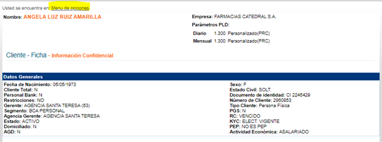
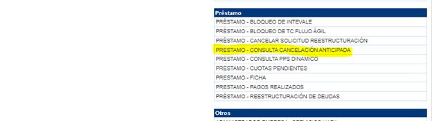
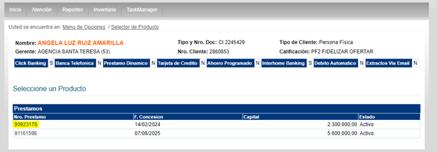
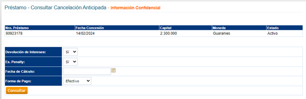
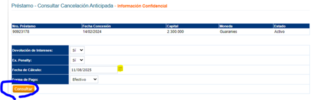
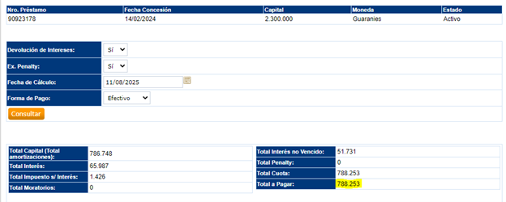

Pasos para verificar el monto a abonar
1. Ingresar a Agencias.com
Dentro de la ficha del cliente, presionar en Menú de opciones.

2. Seleccionar opción
Desplazarse hasta Préstamo → Consulta Cancelación A.

3. Visualizar préstamos vigentes
Se desplegarán los préstamos vigentes del usuario.
- Consultar con el cliente qué préstamo desea cancelar.
- En caso de cancelar todos, ingresar de manera individual a cada uno.
Presionar en el número del préstamo a cancelar.

4. Revisar los detalles
Se mostrarán los detalles del préstamo. Es importante:

- Calcular la cancelación con la fecha en que se procesará.
- Ingresar la fecha y presionar en Consultar.

5. Monto a cancelar
El sistema mostrará el monto a cancelar a la fecha seleccionada.
El valor se encuentra en la parte inferior derecha.

⚠️ Importante: El cálculo aplica únicamente de lunes a viernes.
Si se realiza un sábado, impactará el lunes siguiente.